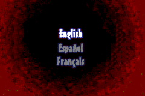

Land Before Time, The - Into the Mysterious Beyond (USA) (En,Fr,Es)
EEPROM 4K gbakit Built-In 1 PCM Samples 💾 MultiBoot
Cartridge Identity
- Game Code
BLOE(FamilyBLO)- Header Title
LBT_ITMB- Maker / Revision
GY/ rev0- ROM Size
- 8.0 MiB (8,388,608 B)
- Save Media
EEPROM 4K- SHA-256
455f5c32ec345b595098b4c284a8db8247310f9a5b3e282567a5ae5b94d39db0- Engine / SDK Group
comm-006(66 families)
Screenshots

Link Cable & Multiplayer Communications
This title contains detected communication capabilities: 💾 MultiBoot.
Detailed protocol specifications, SIO registers, Joybus commands, and MultiBoot sequences are documented in the Link & Multiplayer Reference.
- Single-Cart MultiBoot
- Single-Cartridge MultiBoot (Download Play) client/server handler · Thumb SWI 0x25 (
0xDF25):0x2d2d28,0x365224
Battery Save Support in gbakit
Built-in definition (BLOE)
gbakit save verify BLOE save.sav
gbakit save decode BLOE save.sav
gbakit save fix BLOE damaged.sav -o repaired.savROM Assets, Compression & Audio
- BIOS Compression
- LZ77 (
0x10): 16 streams · RLE (0x30): 0 streams - ROM Pointer Tables
- 8 tables (0 pointing to validated compressed streams)
- SDK Backup Tags
EEPROM_V124- DirectSound PCM Samples
- 1 WaveData samples (0 looped, 53,248 B PCM)
Asset Map (formatkit.asset-map.v1)
Download BLOE-r0-455f5c32ec345b59.asset-map.json.gz (84,939 B (82.9 KiB)) Verified PASS · 52.96% coverage
| Metric | Bytes / Value | Entries |
|---|---|---|
| Identified | 989,018 B (965.8 KiB) (11.79%) | 712 |
| Mapped | 0 B (0.00%) | 0 |
| Opaque | 3,453,792 B (3.29 MiB) (41.17%) | 1 |
| Unknown | 3,945,798 B (3.76 MiB) (47.04%) | 643 |
| Total ROM Size | 8,388,608 B (8.00 MiB) | 1,356 |
| Coverage % | 52.96% | — |
| Entries w/ Code Refs | 739 / 1,356 (54.50%) | — |
Top Identified Formats: audio.krawall-sample (89 · 949,242 B (927.0 KiB)) · gfx.gba-palette (622 · 39,584 B (38.7 KiB)) · gba.rom-header (1 · 192 B)
Largest unknown Extents (Headerless / Custom Asset Candidates)
| Offset | Size | Shannon Entropy | Code Refs |
|---|---|---|---|
0x00272550 | 548,688 B (535.8 KiB) | 3.601 bits/B | 0 |
0x00320BC4 | 325,468 B (317.8 KiB) | 7.892 bits/B | 0 |
0x00008020 | 285,168 B (278.5 KiB) | 6.360 bits/B | 0 |
0x00190360 | 200,928 B (196.2 KiB) | 5.325 bits/B | 0 |
0x00208844 | 164,808 B (160.9 KiB) | 5.717 bits/B | 0 |
gzip -dk BLOE-r0-455f5c32ec345b59.asset-map.json.gz && gbakit map verify rom.gba BLOE-r0-455f5c32ec345b59.asset-map.json
gbakit assets export rom.gba --asset-map BLOE-r0-455f5c32ec345b59.asset-map.json -o out/Text, Fonts & Scene Data
- Primary Text Encoding
- Plain ASCII (uncompressed) (
706ASCII strings ·1Shift-JIS runs) - Font & VWF Indicators
- VWF Width Table 1bpp Font · BIOS SWIs: BitUnPack
0x10:4· LZ770x11/12:3· Huffman0x13:2· RLE0x14/15:2 - Scene & Packaging
19ROM pointer tables (≥32 entries,2≥200) ·0relativeu32TOCs ·182OAM metasprite hits · FourCC:TEXT
Hardware MMIO Subsystems
audio_sound0x8029048dma_transfer0x802878c,0x80288f8,0x8028a64,0x8028c58irq_control0x8028620,0x8028774,0x802878c,0x80288f8,0x8029048keyinput0x8028620,0x8028668,0x802878c,0x80288f8link_serial0x802878c,0x80288f8ppu_display0x8006e08,0x8026e8c,0x8028620,0x802878c,0x80288f8,0x802a540